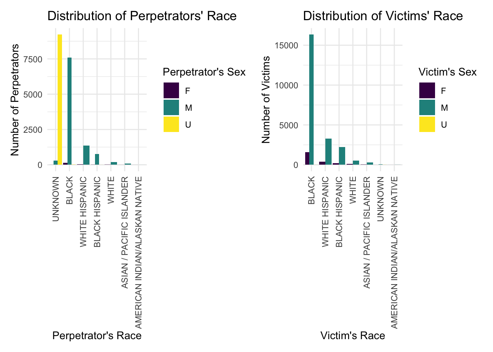

Demographic characteristics
library(tidyverse)
library(rvest)
library(plotly)
library(patchwork)
theme_set(theme_minimal() + theme(legend.position = "bottom"))
options(
ggplot2.continuous.colour = "viridis",
ggplot2.continuous.fill = "viridis"
)
scale_colour_discrete = scale_colour_viridis_d
scale_fill_discrete = scale_fill_viridis_dshooting_initial =
read_csv("./data/NYPD_Shooting.csv") %>% janitor::clean_names()
shooting_2021 = read_csv("./data/NYPD_shooting_New.csv") %>% janitor::clean_names()
#A variable name in shooting_new is different from the initial data, change column name in order to merge the data frames
shooting_2021 = shooting_2021 %>%
rename(lon_lat = new_georeferenced_column)
shooting = rbind(shooting_initial, shooting_2021) %>%
mutate(boro = as.factor(boro)) %>%
mutate(location_desc = replace_na(location_desc, "NONE")) %>%
mutate(location_desc = as.factor(location_desc)) %>%
separate(occur_date, into = c("month", "day", "year")) %>%
mutate(month = as.numeric(month)) %>%
arrange(year, month) %>%
# mutate(month = month.name[month]) %>%
mutate(year = as.character(year)) %>%
mutate(boro = tolower(boro)) %>%
mutate(boro = if_else(boro == "staten island", "staten_island", boro)) %>%
rename(borough = boro) %>%
mutate(date = str_c(month, day, year, sep = "/")) %>%
select(incident_key, date, everything())Based on the shooting dataset we obtained, we could study the demographic characteristics of the perpetrators and victims to see whether there exists some potential patterns or not.
Perpetrators’ Characteristics
First, let’s look at perpetrators’ demographic information.
According to the previously checked numbers of null values in each column, there are 8295 values missing in perp_age_group and 8261 values missing in both perp_sex and perp_race. The information missing maybe not available or unknown at the time of the report and should be considered as either “Unknown/Not Available/Not Reported.”
The same shooting incident may have several victims but corresponding to the same perpetrator. Therefore, for the perpetrators’ characteristics, we filter the data to make sure the incident key is unique to avoid counting the same perpetrators several times.
# group by perp_age_group and do a little summary
sum_perp_age =
shooting %>%
mutate(
perp_age_group = ifelse(is.na(perp_age_group), "UNKNOWN", perp_age_group),
perp_age_group = as.factor(perp_age_group)
) %>%
# count distinct incident case
distinct(incident_key, .keep_all = TRUE) %>%
group_by(perp_age_group) %>%
arrange(perp_age_group) %>%
relocate(perp_age_group) %>%
# filter the abnormal value
filter(!(perp_age_group %in% c("1020", "224", "940"))) %>%
summarize(number = n())
# Visualize by a pie chart
sum_perp_age %>%
mutate(perc = scales::percent(number/sum(number))) %>%
ggplot(aes(x = "", y = perc, fill = perp_age_group)) +
geom_bar(width = 1, stat = "identity") +
geom_text(aes(label = perc),
position = position_stack(vjust = 0.5)) +
coord_polar("y", start = 0) +
scale_fill_brewer(palette = "Pastel1") +
theme_void() +
guides(fill = guide_legend(title = "Perpetrator's Age Group")) +
labs(title = "Pie Chart for Different Perpetrator Age Groups") +
theme(legend.position = "right")
Therefore, except those with unknown age group, most perpetrators are in the age group 18-24 and 24-44, which takes up 39.4% in total. We can see that most of them are quite young or in their middle age. The large percentage of unknown values may also because some of the perpetrators are still unknown/uncaught, which leaves a potential threat to the community.
Now look at perpetrators’ sex and race. Here, we only focus on perpetrators with known sex.
perp_sex_race =
shooting %>%
distinct(incident_key, .keep_all = TRUE) %>%
mutate(
perp_sex = ifelse(is.na(perp_sex), "U", perp_sex),
perp_race = ifelse(is.na(perp_race), "UNKNOWN", perp_race)
) %>%
mutate(perp_race = fct_infreq(as.factor(perp_race))) %>%
group_by(perp_sex, perp_race) %>%
relocate(perp_sex, perp_race) %>%
arrange(perp_sex, perp_race) %>%
summarise(num = n()) %>%
mutate(perc = round(num/sum(num), digits = 2))
perp_sex_race %>%
knitr::kable()| perp_sex | perp_race | num | perc |
|---|---|---|---|
| F | UNKNOWN | 3 | 0.01 |
| F | BLACK | 136 | 0.67 |
| F | WHITE HISPANIC | 39 | 0.19 |
| F | BLACK HISPANIC | 9 | 0.04 |
| F | WHITE | 12 | 0.06 |
| F | ASIAN / PACIFIC ISLANDER | 2 | 0.01 |
| F | AMERICAN INDIAN/ALASKAN NATIVE | 1 | 0.00 |
| M | UNKNOWN | 286 | 0.03 |
| M | BLACK | 7602 | 0.74 |
| M | WHITE HISPANIC | 1370 | 0.13 |
| M | BLACK HISPANIC | 776 | 0.08 |
| M | WHITE | 197 | 0.02 |
| M | ASIAN / PACIFIC ISLANDER | 83 | 0.01 |
| M | AMERICAN INDIAN/ALASKAN NATIVE | 1 | 0.00 |
| U | UNKNOWN | 9225 | 1.00 |
| U | BLACK | 15 | 0.00 |
| U | BLACK HISPANIC | 2 | 0.00 |
# Get the position for the label of the pie charts
position1 =
perp_sex_race %>%
filter(perp_sex != "U") %>%
mutate(csum = rev(cumsum(rev(perc*100))),
pos = perc*100/2 + lead(csum, 1),
pos = if_else(is.na(pos), perc*100/2, pos))
# pie chart
perp_sex_race %>%
filter(perp_sex != "U") %>%
ggplot(aes(x = "" , y = perc*100, fill = fct_inorder(perp_race))) +
geom_col(width = 1, color = 1) +
coord_polar(theta = "y") +
scale_fill_brewer(palette = "Pastel1") +
ggrepel::geom_label_repel(data = position1,
aes(y = pos, label = paste0(perc*100, "%")),
size = 4.5, nudge_x = 1, show.legend = FALSE) +
guides(fill = guide_legend(title = "Perpetrator's Race")) +
theme_void() +
labs(title = "Pie Chart For Different Perpetrator Race in Different Sex") +
facet_grid(.~perp_sex)
From the perp_sex_race chart and the pie charts, most of the perpetrators are males (98.11%), and two races with highest percentage are Black (M: 74%, F:67%) and White Hispanic(M: 13%, F: 19%). Two races with lowest percentage are American Indian/Alaskan Native (nearly 0% for both male and female perpetrators) and Asian/Pacific Islanders (M: 1%, F: 1%). The race information of perpetrators does not vary a lot in different sex.
Victims’ Characteristics
Another important demographic information in shooting incidents is about the victim. What kind of characteristics do they hold? Is there some people more likely to become the victims in such tragedies?
There is only a very limited amount of missing values in the victims’ demographic characteristics: vic_age_group, vic_sex and vic_race, which makes sense cause it’s easier to gather the victims’ information compared to the criminals in shootings.
What age groups are most victims in?
vic_age_group =
shooting %>%
mutate(as.factor(vic_age_group)) %>%
group_by(vic_age_group) %>%
relocate(vic_age_group) %>%
arrange(vic_age_group) %>%
summarise(num = n())
vic_age_group %>%
mutate(perc = scales::percent(num/sum(num))) %>%
ggplot(aes(x = "", y = perc, fill = vic_age_group)) +
geom_bar(width = 1, stat = "identity") +
geom_text(aes(label = perc),
position = position_stack(vjust = 0.5)) +
coord_polar("y", start = 0) +
scale_fill_brewer(palette = "Pastel1") +
theme_void() +
guides(fill = guide_legend(title = "Victim's Age Group")) +
theme(legend.position = "right") +
labs(
x = "Victim's Age Group",
y = "Number of Victims",
title = "Number of Victims in Different Age Groups"
)
As shown above, most victims are in the age group 18-24 and 25-44.
For victims’ sex and race, similarly, check the pie chart.
# The sex and race characteristics of victims
vic_sex_race =
shooting %>%
mutate(vic_race = fct_infreq(as.factor(vic_race))) %>%
group_by(vic_sex, vic_race) %>%
relocate(vic_sex, vic_race) %>%
arrange(vic_sex, vic_race) %>%
summarise(num = n()) %>%
mutate(perc = round(num/sum(num), digits = 2))
vic_sex_race %>%
knitr::kable()| vic_sex | vic_race | num | perc |
|---|---|---|---|
| F | BLACK | 1604 | 0.68 |
| F | WHITE HISPANIC | 409 | 0.17 |
| F | BLACK HISPANIC | 215 | 0.09 |
| F | WHITE | 105 | 0.04 |
| F | ASIAN / PACIFIC ISLANDER | 30 | 0.01 |
| F | UNKNOWN | 1 | 0.00 |
| F | AMERICAN INDIAN/ALASKAN NATIVE | 1 | 0.00 |
| M | BLACK | 16337 | 0.72 |
| M | WHITE HISPANIC | 3262 | 0.14 |
| M | BLACK HISPANIC | 2218 | 0.10 |
| M | WHITE | 541 | 0.02 |
| M | ASIAN / PACIFIC ISLANDER | 316 | 0.01 |
| M | UNKNOWN | 57 | 0.00 |
| M | AMERICAN INDIAN/ALASKAN NATIVE | 8 | 0.00 |
| U | BLACK | 4 | 0.33 |
| U | UNKNOWN | 8 | 0.67 |
# To see the percentage of different race, we can draw a pie chart
# Let's get the position for the label of the pie charts first
position2 =
vic_sex_race %>%
filter(vic_sex != "U") %>%
mutate(csum = rev(cumsum(rev(perc*100))),
pos = perc*100/2 + lead(csum, 1),
pos = if_else(is.na(pos), perc*100/2, pos))
# pie chart
vic_sex_race %>%
filter(vic_sex != "U") %>%
ggplot(aes(x = "" , y = perc*100, fill = fct_inorder(vic_race))) +
geom_col(width = 1, color = 1) +
coord_polar(theta = "y") +
scale_fill_brewer(palette = "Pastel1") +
ggrepel::geom_label_repel(data = position2,
aes(y = pos, label = paste0(perc*100, "%")),
size = 4.5, nudge_x = 1, show.legend = FALSE) +
guides(fill = guide_legend(title = "Victim's Race")) +
theme_void() +
labs(title = "Pie Chart for Different Victim Race in Different Sex") +
facet_grid(.~vic_sex)
Most of the victims are Black (M: 72%, F: 69%), and the number of male victims in shooting cases is much more than female victims.
Put the sex, race information of both the perpetrators and victims together to compare.
# Perpetrators'
bar_perp_sex_race =
perp_sex_race %>%
ggplot(aes(x = perp_race, y = num, fill = perp_sex)) +
geom_bar(
stat = "identity", position = position_dodge()
) +
labs(
x = "Perpetrator's Race",
y = "Number of Perpetrators",
title = "Number of Perpetrators in Different Races"
) +
guides(fill = guide_legend(title = "Perpetrator's Sex")) +
theme(axis.text.x = element_text(angle = 90, vjust = 0.5, hjust = 1), legend.position = "right")
# Victims
bar_vic_sex_race =
vic_sex_race %>%
ggplot(aes(x = vic_race, y = num, fill = vic_sex)) +
geom_bar(
stat = "identity", position = position_dodge()
) +
labs(
x = "Victim's Race",
y = "Number of Victims",
title = "Number of Victims in Different Races"
) +
guides(fill = guide_legend(title = "Victim's Sex")) +
theme(axis.text.x = element_text(angle = 90, vjust = 0.5, hjust = 1), legend.position = "right")
bar_perp_sex_race + bar_vic_sex_race
Summary
Most of both the perpetrators and victims are in the age range 18-24 and 25-44, and is Black or White Hispanic, male. It’s interesting to find so many similarity in these two populations with completely different fate.